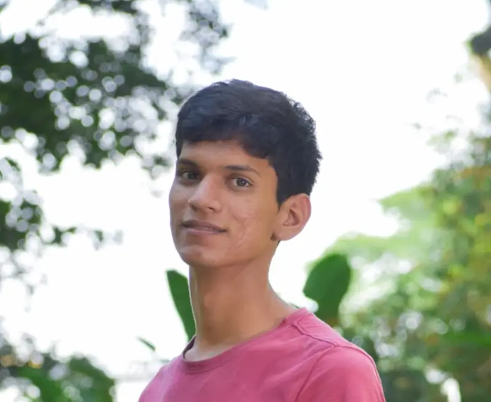

Samuel Pereira | WDD 130
I love software, when I was 13 years old, I discovered I could "program" to create a videogame! with the rules I wanted, with the graphics and bassicly anything I could imagine, it semmed amazing. SoI decided to learn how to make my perfect video game, I eventually learn how to build websites and apps for smartphone, and how to draw and paint digitally. I'm still learning so much and I never get tired. :D